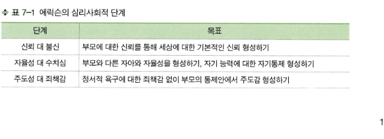
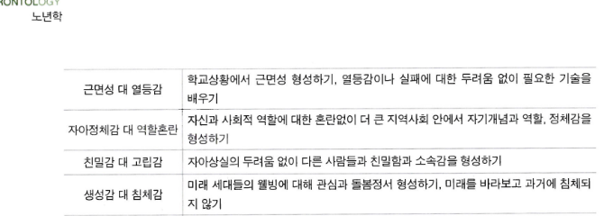
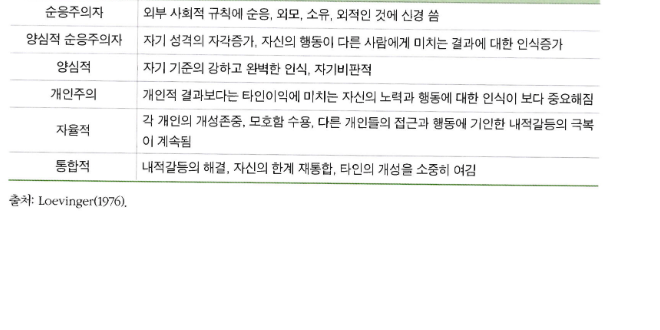
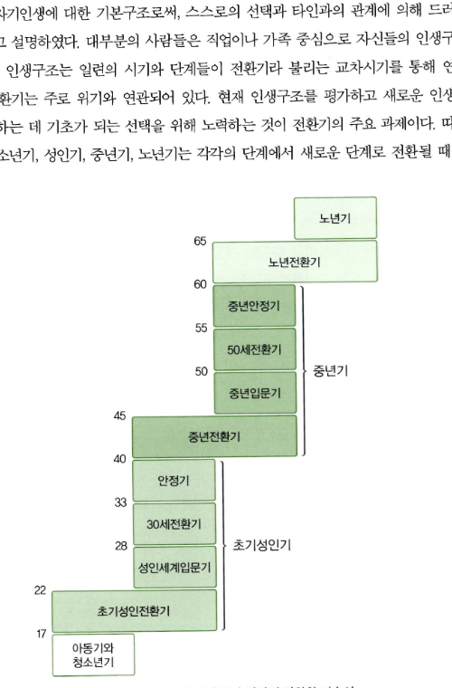
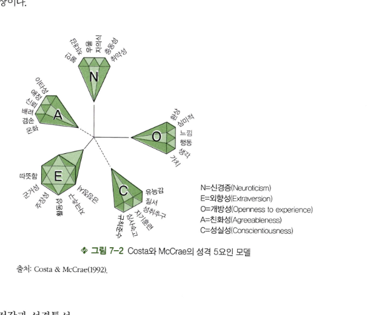
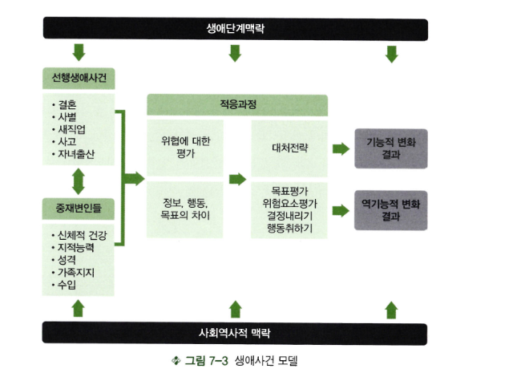
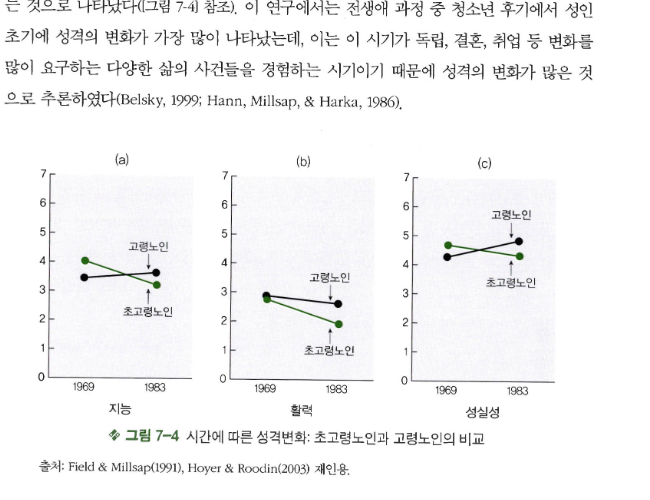
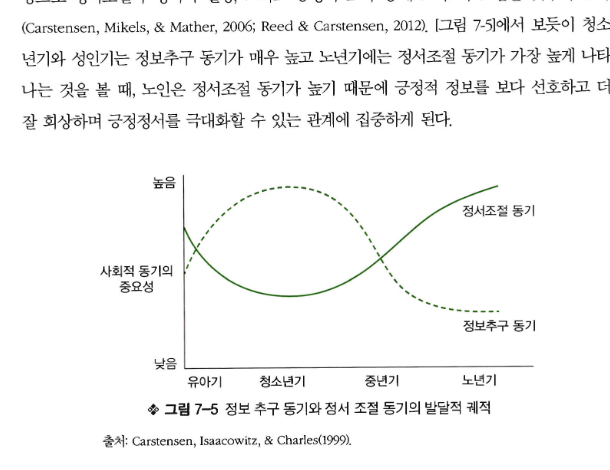

소제목 기준으로 정리한 전체 본문입니다.
도입
CHAPTER 07 심리적 노화 II: 성격 및 정서. 1. 성격발달 / 2. 성격의 변화와 안정성 / 3. 자아발달 / 4. 정서의 변화 / 5. 노년기 적응 “엄마는 아버지가 옆에 있는 한 그다지 말을 많이 하지 않았다. 늘 미소를 띤 얼굴에 아버지가 농담을 하면 소리 내어 웃는 게 전부였다. 엄마는 남들과 엮이지 않고 조용히 그림자처럼 살아온 분이었다. 나는 그게 나름 엄마가 선택한 삶의 방식이라고 생각했다. 그저 원래 잘 웃고 관찰하는 걸 좋아하는 분이라 생각했다. 한데 지금의 엄마는 내가 알던 엄마와는 사뭇 달랐다. 수줍어 하지만 할 말은 다 하는 엄마, 자동차 딜러에게 농담을 하는 엄마.” 연령이 증가하면서 성격이 변했다고 보고하는 사람들이 있지만, 타고난 성격은 변하지 않는다는 사람들도 있다. 이들이 말하는 성격은 같은 것일까? 어떤 요인들이 성격의 변화와 안정성에 영향을 미치는 것일까? “숨이 붙어 있는 한 재밌게 살고 싶어! 드라이빙 미스 노마” 심리적 노화 중 비인지적 노화는 성격, 정서적 측면, 자아개념들을 포함한다. 개인들마다 성격이 다르다고 하는데 성격은 무엇일까? 또 성격의 변화는 타고난 것일까 아니면 환경의 변화에 따른 것일까? 노인의 내적 자아는 연령증가에 따라 변화할까? 나이가 들면 정서적 변화가 있을까? 다음에서는 노년기의 자아발달과 더불어 성격이 변화하는지 아니면 평생 그대로 안정적인지에 대한 연구들과 노년기 정서에 대해 살펴보고자 한다.
성격발달
성격의 개념과 연구 접근
성격이란 개인이 가지고 있는 고유한 행동, 사고, 정서의 양식을 말하는 것으로 개인의 가장 독특한 특성을 말한다 (Hoyer & Roodin, 2003). 성격은 시간과 상황적 변화에 상관없이 상대적으로 계속해서 나타나는 개인의 고유한 특성이다 (Mischel & Shoda, 1995). 한편 성격은 신체적으로 성장하면서 바뀌기도 하고 성숙하게 변하기도 한다. 기존의 연구들은 성격을 연구할 때 주로 발달모델(development model), 특성모델(traits model), 그리고 맥락적 모델(contextual model)을 중심으로 접근하였다. 발달모델은 인간의 성격은 내적·외적 요구에 따라 변화하고 적응하며 성장한다고 보는 것으로 (Erikson, 1963) 에릭슨, 레빙거, 레빈슨 등과 같은 단계이론이 대표적인 발달모델이다. 그러나 특성모델은 타고난 성향적 행동 특성과 성격을 동일시하며 성인기 이후에는 성격이 고정된다고 본다 (Costa & McCrae, 1994). 맥락적 모델은 성격이 맥락의 영향에 의해 변화한다고 설명하는 것으로 생애사건이론이 대표적이다.
성격에 대한 연구들은 주로 성격의 구조와 내용, 역동, 발달을 중심으로 연구되어져 왔다. 자기역동은 자기규제 등과 같은 성격의 역동과정을 중심으로 연구되어 왔고 (Carver & Scheier, 1998), 역동의 혼합체로서의 성격은 전생애발달과정 심리학 쪽에서 자아발달 중심으로 연구되어 왔는데 (Baltes et al., 1998), 이들은 개인의 생물학적 요인과 사회문화적 요인들의 상호작용에 의해 개인의 자아가 계속해서 발달한다고 보며 성인기 이후에도 이러한 발달이 계속 이루어지면서 성격이 변화한다는 입장이다(생애사건모델도 주로 성격의 역동을 중심으로 연구가 진행되어 왔다). 성격구조와 내용은 5요인 모델과 같은 성격특성에 대한 것과 자아구조에 대한 연구들을 중심으로 이루어졌고 성격의 안정성을 강조한다 (Costa & McCrae, 1994). 최근에는 성격에 대한 모델들을 기반으로 한 선행연구결과들을 통합하면서 점차 성인기 이후 인간의 성격은 안정과 변화 유형을 모두 보인다고 한다 (Staudinger & Kunzmann, 2005).
발달모델: 단계이론적 접근
에릭슨의 이론
Erikson(1963, 1968)의 이론은 전생애에 걸쳐 사회적 환경과 문화적 맥락 안에서 성격이 발달한다고 설명한다. 에릭슨은 발달단계별로 인간이 생활하는 사회적 환경이 더 넓어지는데, 그 안에서 인지적·정서적으로 상호작용이 가능해지며, 이는 선천적 계획에 따라 발달한다는 후생적 원리를 강조하였다. 인간의 자아발달은 각 단계별로 발달의 갈등을 통해 성취해야 할 과업이 있고, 과업의 성취는 다음 단계의 발달에 기초가 된다. 따라서 다음 단계로 자아가 발달하기 위해서는 이전 단계보다 인지적, 정서적 발달이 더 요구된다. 다음 세대를 돕고 멘토링하고 싶어 하는 중년기 발달과업인 생성감은 노년기 발달과업을 이루는 데 매우 중요한 것으로 여겨지는데 (Cheng, 2009; James & Zarrett, 2006), 이는 상담, 멘토링, 후원, 유산 남기기, 메모나 편지 기록, 지역사회에서 리더십 발휘하기 등의 형태를 띤다 (Hooyman & Kiyak, 2011). 에릭슨 이론에서 노년기의 발달과업은 자아통합 대 절망이다. 자아통합은 자기 인생의 예전 경험들을 통합하고 자기 삶의 의미를 찾는 것인데, 죽음에 대해 수용하고 지혜와 새롭게 통합된 관점을 얻거나 아니면 자기의 죽음을 받아들이지 못하고 자아통합을 이루지 못해서 절망한다. 처음 에릭슨이 심리사회발달이론을 제안하였던 시기는 인간의 평균수명이 60대인 1960년대였지만 (1963), 에릭슨이 후기노년기를 보내면서 수명이 연장됨에 따라 발달의 다음 단계의 가능성에 대해 언급하였다 (1998). 그는 자아동질적 (syntonic) 대 자아이질적 (dystonic) 갈등의 변증법적 발달단계를 제시하면서 영유아기부터 노년기까지 신뢰 대 불신, 자율성 대 수치심, 주도성 대 죄책감, 근면성 대 열등감, 자아정체감 대 자아혼란, 친밀감 대 고립, 생성감 대 자기침체, 자아통합감 대 절망의 발달 위기를 경험하게 된다고 하였다(〈표 7-1〉 참조).

출처: Erikson(1963). 근면성 대 열등감은 학교상황에서 근면성을 형성하기, 열등감이나 실패에 대한 두려움 없이 필요한 기술을 배우기와 관련된다. 자아정체감 대 역할혼란은 사회적 역할에 대한 혼란 없이 더 큰 지역사회 안에서 자기개념과 역할, 정체감을 형성하기와 관련된다. 친밀감 대 고립감은 자아상실의 두려움 없이 다른 사람들과 친밀함과 소속감을 형성하기와 관련된다. 생성감 대 침체감은 미래 세대들의 웰빙에 대해 관심과 돌봄정서를 형성하기, 미래를 바라보고 과거에 침체되지 않기와 관련된다. 자아통합 대 절망은 삶을 낭비했다는 비통한 절망을 느끼는 대신 자기 삶의 의미를 형성하기, 절망감 없이 자신과 자기 삶을 받아들이기와 관련된다.

그러나 노년 후기에는 이러한 자아이질적 갈등 위기 중 어느 것이든 경험할 수 있는데 이를 극복하고 성취하는 과제로 초월 (transcendence) 을 제시하였다. 초월은 세상을 바라보는 시각이 우주적이고 초월적인 상위관점으로 전환되는 것을 의미한다. Tornstam(2011)은 이를 우주, 자아, 관계의 세 차원으로 나누어 제시하였다. 초월을 성취한 노인은 삶의 만족이 증가하고 우울이 감소하며 덜 자기중심적이고 타인이나 다른 세대들과의 연결성을 느끼는 특징을 보였다(안정신, 2015; Tornstam, 2005, 2011; Wang et al., 2011). 또한 시간이나 삶, 죽음 등에 대해 재정의를 내리며 명상을 하는 등의 특성을 보였다. Tornstam(2005)이 제시한 노년초월은 자신을 넘어서는 방향으로 그리고 앞을 바라보는 초월이라면, Erikson과 Erikson(1998)이 제안한 노년초월은 일생을 정리하는 자아통합단계와 맞물려 회고적인 특징이 있다.
레빙거의 이론
Loevinger(1976, 1997, 1998)는 자아발달이란 자신에 대한 차별화되는 인식이 점차 증가하여 자기 자신과 타인들과의 관계에 대해 보다 정확한 이해가 발달하는 것이라고 강조하였다. 자아는 경험들을 합성하고 터득하며 해석하고자 하는 성격의 구조로서, 자신의 충동을 조절하고 타인과 관계를 형성하며 자기이해를 성취하고 자기 주변에 일어나는 일에 대해 생각하는 능력과 관련된다. 에릭슨은 성인기 발달을 두 단계를 중심으로 제시하였는데, 레빙거는 인간이 개인의 사고와 가치를 형성하는 환경과 상호작용한다는 것을 강조하면서 성인기 발달단계를 확장시켜 제시하였다. 개인들이 모든 단계를 다 거치는 것은 아니고 같은 연령대에 있어도 각기 다른 단계에 속할 수 있다고 보고 있다.
순응주의자 단계에 있는 개인들은 자신과 타인, 사회의 규칙 등에 대해 기본적 이해를 하고 무엇이 옳고 그른지에 대한 단순한 시각을 가지고 있으며 외모나 평판, 소유 등에 신경을 쓰며 다른 사람들이 사고하고 느끼는 방식을 이해하기 어렵다. 양심적 순응주의자 단계는 성인들에게서 가장 많이 관찰되는 단계로 내면에 대한 자각이 증가하고 대안이나 규칙의 예외 등을 인정하는 시기이다. 또한, 자신의 행동이 타인에게 미치는 영향에 대한 인식이 증가한다. 양심적인 단계는 장기적인 개인의 목표나 이상, 책임감, 규칙의 내면화 등을 포함한 양심이 발달하는 단계로 자신과 타인의 정서를 이해하는 능력이 있고 자기 자신의 기준에 따라 규칙을 어길 수도 있다. 나머지 세 단계에서는 개성과 자기결정이 증가하는 특징이 있다. 개인주의적 단계는 개성을 존중하고 불확실성과 모순을 견딜 수 있는 능력을 갖출 수 있다. 자율적 단계에서는 다른 사람들의 개성을 존중하고 개인적 욕구와 타인에 대한 의무 간의 내적 갈등에 대처할 수 있으며, 복잡하고 다면적인 현실을 볼 수 있다. 또한 광범위하고 추상적이며 사회적 사고를 할 수 있다. 마지막으로 통합적 단계는 자율적 단계와 유사하지만 타인의 개성도 소중히 여기며, 자기정체감에 대해 확신하고 진실한 자기 자신을 완벽하게 표현할 수 있어 자아실현의 단계라 볼 수 있고 극소수의 성인들만이 도달한다 (〈표 7-2〉 참조). 레빙거 이론은 도덕성 발달과 자아심리를 결합하였고, 자아발달 문장완성 검사에 인지적 요소들도 상당히 포함되어 있어 자아발달과 인지적 능력의 상관을 보여주고 있다.

레빈슨의 이론
Levinson은 성인발달의 구조에 대해 35세에서 45세의 남성 40명을 대상으로 연구하여 『인생의 사계절』(1978)을 발표하였다. 그의 이론에 따르면 인생구조란 개인에게 있어 특정 시간대의 자기 인생에 대한 기본구조로써, 스스로의 선택과 타인과의 관계에 의해 드러나는 것이라고 설명하였다. 대부분의 사람들은 직업이나 가족 중심으로 자신들의 인생구조를 만든다. 인생구조는 일련의 시기와 단계들이 전환기라 불리는 교차시기를 통해 연결되는데, 전환기는 주로 위기와 연관되어 있다. 현재 인생구조를 평가하고 새로운 인생구조를 형성하는 데 기초가 되는 선택을 위해 노력하는 것이 전환기의 주요 과제이다. 따라서 아동청소년기, 성인기, 중년기, 노년기는 각각의 단계에서 새로운 단계로 전환될 때 성인기 전환기, 중년기 전환기, 그리고 노년기 전환기와 같은 세 번의 커다란 전환기를 갖게 된다([그림 7-1] 참조).

성인기 전환기, 중년기 전환기, 그리고 노년기 전환기와 같은 세 번의 커다란 전환기를 갖게 된다. 또한 각 시기는 이전 단계에서 현 단계로 넘어올 때, 전환기를 경험하고 나서 진입기와 중간전환단계, 그리고 안정기로 구분된다. 진입기는 그 시기의 주요 과제들을 경험하고 시도하는 시기이고 중간전환단계에서는 현재의 인생구조를 점검하는 시기로 볼 수 있다. 이러한 점검을 마친 후에는 안정기를 보내다가 다음 단계로의 전환기를 다시 경험하게 되는 것이다([그림 7-1] 참조). 중년기에는 인생구조가 변화되는데, 40세에서 45세 시기의 성인들은 주로 이루지 못한 꿈을 앞으로도 이루지 못할 것이라는 인식과 함께 정서적 위기를 경험하기 쉽다. 레빈슨 연구에 참여한 남성들의 5분의 4 정도가 이러한 분노를 느끼고 비이성적으로 행동하였는데, 이전에 가지고 있던 가치들에 대한 재평가가 일어나고 자아상과 목표를 보다 현실적인 것으로 수정하였다. 45세에서 50세 사이의 남성들은 새로운 직업이나 재혼 등을 통해 새로운 인생구조를 만들기도 하고, 그렇지 않은 사람들은 다시금 자기들이 중년기까지 끌고 온 구조에 재헌신하기도 한다. 다시 말하면, 중년기 위기는 유년기 꿈을 성취하지 못한 데 대한 환멸을 극복하고 남은 성인기 동안 어떻게 인생구조를 수립할 것인지 결정하는 것이 주요 과제인 시기라고 할 수 있다. 60세에서 65세까지는 노년기 전환기로, 은퇴를 준비하며 노년기 변화에 대비하는 매우 중요한 전환점이다. 이 시기는 자신과 동료들의 노화에 따른 신체적 쇠퇴로 인한 불안을 경험한다. 65세 이후부터는 은퇴와 신체적 쇠퇴에 적합한 인생구조를 수립하여야 하고 자신들의 과거, 현재, 미래의 현실을 받아들이는 삶의 방식을 발달시켜야만 한다. 레빈슨에 따르면 여성들도 남성들과 유사한 패턴을 보인다고 하였는데, 30세 넘어서 인생구조의 전환이 일어나는 것은 맞으나, 여성들은 남성들보다 이후 복잡한 인생구조 형태를 보이며 직업적 성취와 대인관계에 더 많은 걱정을 표현하게 된다고 하였다 (Robert & Newton, 1987). 특히 한국의 경우 직업을 갖는 여성의 수가 급증하였고 가족과 직업 중 직업에 대한 비중을 더 두는 여성의 수가 증가하면서 이들의 인생구조의 변화가 어떠할지에 대한 실증적 연구들이 필요하다.
특성모델: 성격 5요인 모델
특성이란 개인 성격의 한 요소가 되는 안정적이고 항구적인 특징으로 사람들의 행동을 이끄는 특정한 성향을 말한다 (Whitbourne, 2008). 기본특성은 수가 적고 (5~10개 정도) 한정된 수의 중심특성에 영향을 미치며, 중심특성은 기본특성보다 수가 조금 더 많고 (수십 개 정도) 수백 가지의 다른 표면특성들에 영향을 미칠 수 있다 (Hershy & Mowen, 2000). Costa와 McCrae(1980)에 의하면 특성이란 상당한 시간 동안 다양한 상황에서 계속되는 사고, 정서, 그리고 행동의 성향으로 타고난 소인과 환경의 상호작용에 의해 영향을 받는다.
5요인 모델 성인기 이후 성격 특성이론은 Costa와 McCrae(1992)가 제안한 5요인 모델이 가장 대표적이다. 이들은 다섯 개의 기질들과 각각을 설명하는 여섯 개의 측면들을 제시하여 30개로 조합된 성격요소들을 제시하였다. 다섯 개의 기질들은 신경증, 외향성, 개방성, 성실성, 친화성으로 대표된다. 신경증은 심리적 스트레스와 과민반응, 불안정성 등을 경험하는 경향으로 불안, 적대감, 우울, 자의식, 충동성, 그리고 취약성의 여섯 가지 측면이 대표적인 특성이다. 외향성은 사회적 상호작용과 활발한 활동을 선호하며, 따뜻함, 군거성, 주장성, 활동성, 자극추구, 긍정정서가 특징적이다. 개방성은 새로운 생각과 접근, 경험들에 수용적이고, 환상, 심미적인 특징을 보인다. 친화성은 타인에 대한 이타적 관심과 신뢰와 관대함을 특징으로 하며 솔직하고 이타적이며 겸손하고 마음이 온화한 성격특성이다. 성실성은 자기규율적이고 양심이 있으며, 조직적인 특성을 보이고, 유능하고 순종적이며 자기훈련과 숙고하는 특징을 보인다([그림 7-2] 참조). 5요인 모델로 개인성격을 측정할 때는 NEO 개인성격 측정도구 (NEO Personality Inventory Revised)(Costa & McCrae, 1992)를 주로 사용한다. 성인기 이후 성격은 생활사건들에 의해 변화된다고 생각하지만 특성이론에서는 경험은 개인의 성격특성에 의해 영향을 받는다고 설명한다 (Costa, Herbst, McCrae, & Siegler, 2000). 예를 들어 살면서 배신을 경험한 사람들이 냉소적인 성격을 갖게 된다기보다 냉소적인 성격을 가진 사람들은 처음부터 다른 사람들을 잘 믿지 않기 때문에 배신을 당하기 쉽다는 것이다. 따라서 경험에 의해 성격이 변하는 것이 아니라 자신의 성격특성에 따라 경험이 만들어진다는 주장이다.
N=신경증 (Neuroticism), E=외향성 (Extraversion), O=개방성 (Openness to experience), A=친화성 (Agreeableness), C=성실성 (Conscientiousness). 그림 7-2 Costa와 McCrae의 성격 5요인 모델. 출처: Costa & McCrae(1992).

건강과 성격특성
성격특성 모델은 성인기 개인의 성격과 건강 간의 관계를 연구하는 데에 매우 유용하다. 선행연구들은 특정한 성격유형과 건강 간의 관계에 대해 관심을 가졌는데, 성격유형을 Type A와 Type B형, 그리고 Type C형으로 구분하여 개인의 성격 특성과 특정 질병과의 상관을 확인하였다. 특히 경쟁적이고, 적대감도 강하며, 참을성 없고, 시간에 쫓기며, 성취지향적인 Type A 성격유형과 심혈관 질환의 상관에 대한 연구들이 진행되었다 (Boyle, Jackson, & Suarez, 2007; Friedman & Roseman, 1974). 연구결과에 따르면 적대감과 우울, 분노 등이 심장질환 및 위험인자에 매우 강한 영향을 미쳤다. 또한 Type A들이 많이 보이는 불안과 높은 스트레스 수준, 분노 등은 여러 위험인자들을 통제하여도 심혈관 질환과 매우 높은 관련을 보였다 (Kubzansky, Cole, Kawachi, Vokonas, & Sparrow, 2006). Type A형의 행동 중에서도 적개심이 심장질환과 관계가 높다고 나타났다. 내성적이고 완고하며 불안해하는 Type C는 암에 걸릴 확률이 높은데, 이들은 감정표현을 잘하지 않는 것으로 나타났다(정옥분, 2008에서 재인용). 또한 성격특성과 건강상태에 관련한 연구들을 살펴보면, 어린 시절 성실성이 낮은 개인은 BMI 지수나 삶의 여러 영역들에 주의를 기울이지 않아 청소년기나 성인기에 몸무게 증가나 높은 사망률 등을 보이는 것으로 나타났다 (Friedman et al., 1995; Pulkki-Raback et al., 2005). 성인 초기의 낮은 성실성과 높은 신경증은 흡연과 상관이 높고 (Terracciano & Costa, 2004) 높은 적대감은 이후 우울증의 매우 강력한 위험인자가 되기도 한다 (Siegler et al., 2003). 따라서 기질에 의해 나타나는 성격특성과 행동유형 등은 개인의 건강에 매우 다양한 방식으로 영향을 미친다고 볼 수 있다.
맥락적 모델: 생애사건 접근
성격발달의 특질이론과 단계이론적 접근의 대안으로 등장하는 것이 생애사건 접근 또는 맥락적 모델이다. 생애사건 접근 또는 맥락적 모델의 초기 연구자들은 배우자의 죽음이나 이혼 등과 같은 인생의 주요 사건들이 개인들에게 아주 힘든 상황을 만들고 성격의 변화를 만들어 낸다고 하였다. 그러나 보다 정교화된 생애사건 접근은 신체적 건강이나 지능, 성격, 가족지지, 수입 등과 같은 요인들이 성인발달에 미치는 생애사건의 영향력을 조절한다는 것을 강조한다. 어떤 개인들은 생애사건을 매우 힘든 상황으로 지각하지만 다른 사람들은 도전으로 인지하기도 한다고 설명한다. 성인들의 자아발달은 사회역사적 배경과 개인적 배경에 대한 분석에 의해 이해될 수 있다 (Neugarten, 1964). 따라서 연령 자체는 성인 발달의 지표가 되는 주요한 생애사건들보다 발달적 변화에 대한 영향력이 상대적으로 적다고 보고 있다. 오히려 결혼이나 직업성취, 중년기 위기 등과 같은 인생의 과업들을 성취하기 기대하는 사회적 시간표는 사회적 환경 안에서 변화 가능하다고 설명한다. 생애단계, 생애사건이 일어날 가능성, 생애사건이 스트레스원으로 영향을 미치는 관계는 개인이 이러한 사건들의 스트레스에 대한 대처방식을 발달시키는 데 매우 중요하다. 생애단계 맥락과 사회역사적 맥락은 생애사건 스트레스에 적응하는 과정에 영향을 미치며 이는 개인적 시간과 역사적 시간이 개인의 인생에 미치는 영향력을 잘 보여준다고 볼 수 있다. 다시 말하면 결혼이나 배우자 사별, 취업, 사고, 출산 등의 인생의 선행사건들과 신체적 건강, 지능, 성격, 가족지원, 수입 등의 중재요인들이 상호작용하여 적응과정에 영향을 주고, 이는 생애단계 맥락과 사회역사적 맥락에 의해 영향을 받아 기능적인 변화인지 역기능적인 변화인지가 결정된다는 것이다([그림 7-3] 참조). 그림 7-3 생애사건 모델. 출처: Hoyer & Roodin(2003). 생애사건 모델은 변화를 너무 강조하여 성인발달의 안정성과 특성들을 설명할 수 없다는 지적을 받는다. 또한 인생사건을 성격변화의 주요촉발요인으로 너무 강조하였는데, 일반적으로 인생사건보다는 일상생활의 스트레스들이 더 큰 스트레스일 수 있다는 (Lazarus, 2000) 점을 간과했다는 지적도 있다.

성격의 변화와 안정성
성격은 중노년기 동안 변화하는지 아니면 원래 성격이 계속 안정적인지에 대한 연구들이 앞에서 제시한 이론들에 근거하여 진행되어 왔다. 성격의 변화와 안정성을 보여주는 연구들은 각각 성격의 어떤 면에 초점을 두느냐에 따라 안정성과 변화에 대한 설명이 다른 것으로 보인다. 성격의 변화에 초점을 두는 학자들은 단계이론처럼 주로 자아 (ego) 발달과정에 관심을 기울여 성격특질은 안정적이어도 자아는 평생 변화한다고 주장한다(김애순, 2012). 또한 생애사건 모델처럼 개인이 경험하는 생애사건들이 성격의 변화를 이끈다고 설명하기도 한다. 성격의 안정성을 강조하는 학자들은 (Costa, McCrae, & Arenberg, 1980; McCrae & Costa, 1990) 주로 특질이론에 근거하여 성격특질 (trait)에 초점을 두고 연구를 진행하였다(김애순, 2012에서 재인용).
성격의 변화
캔자스시티 성인생활연구에서 Neugarten 연구팀이 1950년대에 40세에서 90세까지의 성인남녀들에게 면담과 심리검사를 실시한 결과, 나이가 들수록 자아에너지가 감소하고 내향성이 증가하며 도전보다는 회피하는 경향이 나타났고, 남녀의 전통적 성역할지각이 모호해진다는 결과를 제시하였다 (Neugarten & Gutmann, 1964; Rosen & Neugarten, 1964). 밀스대학 연구는 1950년대 말부터 1960년대 초까지 졸업반이었던 여성들을 50대까지 태도, 특질, 자아, 대처양식 등의 변화를 살펴본 연구로, 20대 후반부터 40대 초반까지 우월감과 유능감이 증가한 것을 발견하였다 (Helson & Moane, 1987). 또한 40대부터 50대 초반까지는 양성화되고 통합적인 자아를 형성하였다는 결과를 보여 연령증가에 따른 성격의 변화를 강조하였다 (Mitchell & Helson, 1990). 마지막으로 버클리 노인세대연구는 1928년과 1929년에 약 420명의 남녀를 첫 인터뷰하고 55년이 넘도록 연구대상자들의 성격의 변화와 안정성에 대해 연구하였다. Field와 Millsap(1991)은 지능, 성실성, 친절함, 만족, 활력적 등의 특성을 접근하는 인터뷰결과를 분석하였다. 자료를 전체로 보았을 때는 신체적·대인관계적 상실이 계속되는 노년기에도 만족과 친절함은 안정적 특성으로 나타났다. 반면 지능과 활력, 성실성은 다소 감소하는 것으로 나타났다([그림 7-4] 참조). 이 연구에서는 전생애 과정 중 청소년 후기에서 성인 초기에 성격의 변화가 가장 많이 나타났는데, 이는 이 시기가 독립, 결혼, 취업 등 변화를 많이 요구하는 다양한 삶의 사건들을 경험하는 시기이기 때문에 성격의 변화가 많은 것으로 추론하였다 (Belsky, 1999; Hann, Millsap, & Harka, 1986). 그림 7-4 시간에 따른 성격변화: 초고령노인과 고령노인의 비교. 출처: Field & Millsap(1991), Hoyer & Roodin(2003) 재인용.

성격의 안정성
볼티모어 장기종단연구는 생애주기 동안 성격특성의 안정성을 보여주는 대표적인 연구이다. 이는 1950년대부터 시작된 연구로, 대부분 교육수준이 높고 백인이며 건강한 30대부터 80대 이상의 연구대상자들이 참여하였다. 이들은 다양한 주제에 대한 자신들의 견해나 감정, 활동들을 자기보고하며 다양한 표준화된 심리성격 검사를 받았는데, 이들 자료는 횡단, 종단, 계열설계 방법으로 분석되었다. 분석결과 Costa와 McCrae(1977, 1978, 1980, 1982, 1985, 1986)는 성격의 5요인 모델을 발견하였고, 특히 신경증, 외향성, 그리고 개방성은 성인기 동안 매우 안정적이라는 것을 발견하였다. 자기보고 방식이 성격의 안정성의 착각일 수 있다는 문제점이 있어 배우자에게 자기 남편의 성격특성을 평가하게 하는 객관적 접근을 하였어도 성격의 5요인 모두 안정적인 결과가 나왔다 (Costa & McCrae, 1980). 또한 결혼이나 직업과 같은 생애사건 변화들은 성격요인에 거의 영향을 미치지 않는 것으로 나타났다.
타문화권과의 비교연구들을 통해서도 성격에서의 연령차이는 대부분 코호트 차이이고 이러한 차이도 단기횡단적 비교에서만 나타났다 (McCrae et al., 1999). Schaie와 Willis(1991)의 시애틀 장기종단 연구는 22세에서 84세 사이의 3442명 남녀의 행동경직성, 태도유연성, 그리고 사회적 책임감 등을 1956, 1963, 1970, 1977, 1984년에 걸쳐 측정하였다. 횡단적 분석결과는 개인들이 나이가 들면서 보다 경직되고 덜 유연하였지만, 종단자료는 대부분의 성격특성들이 60대 후반까지 안정적이고 그 이후 아주 적은 부정적 변화가 있음을 보여주었다. 계열설계방법의 자료분석은 횡단분석의 결과가 세대 또는 코호트 영향임을 보여주고 있었다. 젊은 세대의 경우는 꽤 세가 지나도 보다 유연하고 열린 행동으로의 변화가 있는 것을 발견하고 이러한 추세는 미래 세대들에게도 계속될 것으로 보여 성격의 안정성을 지지하였다. 베를린 노화연구는 성격발달, 사회관계, 인지적 기능 등에 노화가 미치는 영향을 연구한 것으로 (Baltes, Mayer, Helmchen, & Steinhagen-Thiessen, 1993; Baltes & Smith, 1997), 다른 연구들과 달리 연구 초기부터 노인들을 포함하고 각 연령대별로 (70~74, 75~79, 80~84, 85~89, 90~94, 95~103세) 남녀의 비율을 똑같이 하여 신체적 건강, 외모, 정신건강, 성격과 웰빙, 인지기능과 지각능력, 사회적 역할과 가족 내 역할 등에 대해 상당히 광범위한 주관적 및 객관적 측정도구를 사용하였다. 연구결과 개인들은 나이가 들어도 비슷한 성격특성들을 보였고, 가장 나이든 집단과 여자노인들은 건강이 나쁘고 사회적 역할과 가족 내 역할에 적응을 잘 못하지만 대부분 초기측정이 상대적으로 노년기까지 안정적이라는 것을 보였다.
자아발달
자아와 자기개념
자아 (self)란 자기 내면의 시각이다. 이는 자신과 세상을 경험하는 의식적 주관성이 중요하므로 주관적인 자아 (I)와 객관적인 자아 (Me)의 상호작용에 의해 발달한다. 주관적인 자아는 내가 경험하고 인식하는 내 고유한 자아이고 자기 자신의 외적표현의 관찰과 해석과정을 통해 객관적 자아를 형성한다. 다시 말하면, 객관적인 자아는 행동이나 언어 등을 통해 타인이 보고 들을 수 있는 자아로 주관적 자아에 의해 구성된다. 객관적 자아는 사회적, 시간적, 공간적 맥락과 상호작용하면서 형성되는 것으로 신념이나 정신적 표상을 구성하고, 이는 다시 자신의 의사결정이나 자기규제 등에 영향을 미쳐서 주관적 자아의 경험에 영향을 주는 방식으로 서로 상호작용하게 된다. 주관적 자아와 객관적 자아는 일상생활에서 계속 상호작용하면서 자아를 변화시키는데, 노인들의 경우 이 두 자아의 차이가 발생하면서 자기개념 (self-concept) 이 변화된다. 자기개념은 행동을 일으키는 현실의 내적 작동모델 또는 구조인 도식 (schema) 에 의해 만들어지며 자기가 누구이고 어떤 일을 해왔는지에 대한 이해와 앞으로 자기가 어떤 존재가 될 것이고 어떤 일을 할지를 결정한다 (Markus & Cross, 1990).
노인들의 경우에는 주관적인 자아가 경험을 직면하고 해석하며 반응하는데 (Whitbourne & Primus, 1996) 사회에서 경험하는 자아에 대한 이미지들이 축적되어 자기개념을 형성하게 된다. 예를 들면, 연령차별적 사회에서 노인들이 노인에 대한 부정적 경험들을 직면하게 되면 노인에 대한 부정적 이미지로 객관적 자아를 형성하게 되고 이러한 부정적 이미지는 노인들의 의사결정이나 규제 등에 영향을 미쳐 부정적 자기개념을 형성하게 되는 것이다. 노인들이 거울에 비쳐진 모습으로서의 자아 (looking glass self) 를 내 모습의 일부로 흡수하여 자아상을 형성해 간다는 것이다. 자기개념 모델에 의하면 자기지각은 자기동화 (self-assimilation) 와 자기조절 (self-accommodation) 이라 불리는 사회적 환경과의 계속적인 상호작용에 의해 재확인하거나 수정되거나 한다 (Whitbourne, 1987). 자기동화란 새로운 경험을 기존의 자기개념에 맞추려는 시도이고 자기조절은 기존 자기개념을 경험에 맞추어 조정시키는 것이어서, 자기조절이 자기동화보다 어렵고 훨씬 적응적인 기술을 요구하게 된다 (Whitbourne & Primus, 1996). 예를 들어 은퇴한 교사의 경우는 과거 몇십 년 동안 자기의 주요관심사였던 일을 포기할 때 자기정체감에 큰 혼란이 있고, 아내의 역할에 자기개념을 동화시켜 온 여자 노인은 남편의 죽음 이후 자아정체감에 적응적 변화가 요구된다. 따라서 기존의 자기개념과 새로운 사회적 역할을 동화시키고 변화된 현실에 기존 자기개념을 적당히 조절하는 것이 자기개념의 성공적 적응에 매우 중요한 지표가 된다. 과거 자기역할과 차별화된 자아개념을 발전시키지 못하는 노인은 부정적 결과들을 더 많이 경험하는 경향이 있다 (Hooyman & Kiyak, 2011). 그러나 대부분의 노인은 건강과 중요한 타인의 상실 등을 경험하더라도 오랫동안 가져온 자기개념들은 대부분 유지하는 것으로 보인다 (Diehl, Hastings, & Stanton, 2001).
성인기 이후의 자기개념
성인기 이후의 자기개념은 실존적 자아, 사회적 자아, 가능한 자아 등으로 연구되었다. 노년기에는 노화경험이나 신체기능, 외모의 변화 등 생물학적인 노화와 관련된 실존적 자아 (existential self)가 연령이 증가할수록 매우 핵심적 자아가 되어가고 사회적 자아는 점차 중요한 자아로 여겨지지 않는다 (Dittmann-Kohli, 2005). 개인의 희망과 두려움에 대한 가능한 자아 (possible self)는 연령에 따라 변화한다. Ryff(1991)는 청년, 중년, 노년 성인들에게 과거, 현재, 미래, 이상적 자아를 심리적 웰빙의 여섯 가지 차원(자기수용, 타인과 긍정적 관계, 자율성, 환경에 대한 통제감, 인생의 목표, 개인적 성장)에 대해 표시하도록 하였다. 그 결과 연령이 증가하면서 과거, 현재, 미래, 이상적 자아의 차이가 줄어들었다. 연령이 증가하면서 과거를 수용하고 현실과 이상의 차이를 줄이면서 자아통합을 이루어 가는 것으로 볼 수 있다 (Keyes & Ryff, 1998).
노인의 자기개념이 사회적 역할이나 다른 사람들의 기대에 근거한다면 자아존중감 (self-esteem)은 역할상실에 의해 크게 영향을 받는다. 자기개념은 자아정체감의 자기지각으로 인지적 정의이지만 자아존중감은 자기에 대한 정서적 접근에 근거한다. Erikson(1968)은 자아정체감 형성을 청소년기의 발달과업으로 제시하였지만, 중노년기의 신체적·사회적 변화들로 인해 자아정체감의 재조정이 인생의 후반에 중요하다고 지적하였다 (Biggs, 1999; van Halen, 2002). 노년기 자아정체감은 은퇴나 사별, 건강상태 등의 신체적·사회적 요소들에 의해 쉽게 영향을 받는다. 특히 사회적 역할은 개인과 사회를 통합하고 삶의 의미를 더해주기 때문에 역할의 대체나 상실은 노인의 자아존중감에 부정적 영향을 미친다. 예를 들어 평생 가족들을 돌보는 것을 자신의 사회적 역할로 살아온 노인이 치매나 심혈관질환 등으로 인해 타인에게 의존적 상태가 되면 "이상적 자아"를 빼앗기게 되고 자아존중감에 상처를 입게 된다. 연령이 증가할수록 노인들의 웰빙이나 자아존중감을 유지할 수 있는 원천은 주로 감소한다. 노화의 진행에 따라 경제적 불안정이나 사회적 관계의 축소 등 웰빙의 원천들에 부정적 변화가 발생하는데도 노인들의 심리적 웰빙이나 자아존중감은 안정적인 것으로 보인다. 이는 노인들이 선택과 보상과 같은 적응과정을 통해 가치와 목표를 재조정하고 삶의 새로운 의미와 목표나 활동을 변화시키기 때문으로 보인다 (Dittmann-Kohli, 2005). 즉 자신의 "이상적 자아"와 현재 자아의 차이를 조절하고 새로운 역할을 통합하며 "이상적"의 정의를 조절하기 때문이다. 스트레스를 유발하는 부정적 인생사건들이나 장애 등은 노인의 자아존중감에 부정적 영향을 주지만, 사회적 관계를 유지하고 자원봉사나 시민봉사활동 등에 참여하면서 활동적 노화를 실천하는 노인의 경우 개인적 유능함을 경험하고 심리적으로 더 나은 상태를 보이는데 (Ryff, Kwan, & Singer, 2001; Windsor, Anstey, & Rogers, 2008) 바로 긍정적 자아를 유지하기 위한 적응과정의 결과로 보인다.
정서의 변화
노년기 정서조절
노년기 정서에 관한 연구들은 대부분 차별적 정서이론 (Izard, 1997)에 근거한다. 차별적 정서이론에 의하면 분노, 공포, 슬픔 등의 부정적 정서와 즐거움, 행복, 사랑, 경탄 등의 긍정적 정서가 프로그램화되어 있어서 연령이 증가해도 차이가 없다는 것을 강조한다. 상당히 많은 연구들이 이러한 정서체계는 연령에 따라 변화하는지 그리고 개인이 정서를 조절하는 것이 가능한지에 대해 살펴보았다. 노화가 진행되면서 정서적 변화가 일어날까 하는 질문에는 일반적으로 노년기에 경험하는 상실의 경험들과 우울한 생활사건들로 인해 부정적 정서가 증가할 것이라는 예측을 많이 한다. 그러나 정상적 노화에 의해서는 정서적 웰빙이 감소하지 않는 것처럼 보인다 (Mather & Ponzio, 2016). 예를 들면, 노인은 젊은이들보다 더 행복하다고 느끼고 (Stone et al., 2010) 덜 화내며 슬픔에 연령차가 거의 없는 것으로 보고되었다 (Kunzmann, Richer, & Schmukle, 2013; Kunzmann & Thomas, 2014). 노인은 주의집중과 기억력에서도 연령증가에 따른 긍정적 효과가 있어서 긍정적 정보를 부정적 정보보다 선호하였고 (Reed, Chan, & Mikels, 2014) 긍정적 이미지를 더 잘 회상하였다 (Charles, Mather, & Carstensen, 2003). 왜 노인이 긍정적 정보에 더 주의를 기울이고 기억하는지에 대한 답은 전두엽 통제 기능이 감정을 자제하는 자극보다 정서를 활성화시키는 자극에 보다 활동적이어서 정서적 정보처리를 돕는 것과 관련이 있으며 사회정서적 선택이론에서 강조하는 동기의 영향이라는 설명도 가능하다 (Mather & Ponzio, 2016). 사회정서적 선택이론에 따르면, 살날이 얼마 남지 않았다는 자각을 한 노인은 자신들의 환경을 정서적으로 기능과 의미를 최적화할 수 있는 것을 목표로 하기 때문에 긍정적 정서를 유지하고 부정적 정서를 최소화할 수 있게 된다는 것이다 (Carstensen et al., 2003). 다시 말하면, 노인은 제한된 시간조망으로 정서조절과 정서적 웰빙, 그리고 긍정적 효과 등에 보다 더 초점을 맞추게 된다 (Carstensen, Mikels, & Mather, 2006; Reed & Carstensen, 2012). [그림 7-5]에서 보듯이 청소년기와 성인기는 정보추구 동기가 매우 높고 노년기에는 정서조절 동기가 가장 높게 나타나는 것을 볼 때, 노인은 정서조절 동기가 높기 때문에 긍정적 정보를 보다 선호하고 더 잘 회상하며 긍정정서를 극대화할 수 있는 관계에 집중하게 된다.
그림 7-5 정보 추구 동기와 정서 조절 동기의 발달적 궤적. 출처: Carstensen, Isaacowitz, & Charles(1999).

정서조절 전략은 정서-최적화와 정서-차별화로 구분할 수 있는데, 부정적 정서를 최소화하고 불쾌한 감정을 무시하며 자기 의심이 낮은 사람들은 최적화 전략을 사용한다. 이들은 자기 인생에서 주요한 부정적 사건들도 별로 없다고 보고한다. 반면 차별화 전략을 사용하는 사람들은 인지정서적 복잡성을 선호하고 자기 정서를 분석하며 모호함을 잘 견디고 억압도 낮으며, 자기 인생에 부정적 인생사건들이 있었다고 보고한다 (Labouvie-Vief & Medler, 2002). 성인기에 최적화와 차별화는 각각 다른 경로로 발달되는데, Labouvie-Vief(2005)는 이들을 네 유형으로 구분하였다. 높은 최적화와 차별화를 보이는 통합형 (integrated), 낮은 최적화와 차별화를 보이는 불규칙형 (dysregulated), 최적화는 높고 차별화는 낮은 자기보호형 (self-protective), 그리고 낮은 최적화와 높은 차별화를 보이는 복잡형 (complex) 유형은 연령대별로 차이를 보였다. 노인들은 주로 자기보호형 (42%)과 통합형 (41%)으로 구분되어 젊은 사람들보다 훨씬 더 긍정적 정서조절을 하는 것으로 나타났다. 많은 연구자들이 젊은 사람들과 노인들의 정서를 자기보고 도구를 사용하여 접근한 결과 노인의 긍정적 정서조절을 확인하였다 (Charles et al., 2001; Labouvie-Vief & Medler, 2002; Mroczek & Kolarz, 1998). 노인들은 젊은 사람들보다 자기정서 조절을 더 잘하였고, 부정적 정서가 유발될 때 신체적 반응에서도 반응성을 덜 보이는 경향이 있었고 (Levenson et al., 1991) 전반적으로 각성수준도 낮았다. 그러나 이것이 모든 상황에 적용되는 것은 아닌 듯하다. Labouvie-Vief 등 (2003)은 이러한 패턴이 여성들에게서는 나타나지만 남성들에게서는 나타나지 않았다고 하였고, Kunzmann과 Gruhn(2005)의 연구에서는 노인들이 부정적 정서에 훨씬 더 반응하는 상황들(예를 들어 중년 여성이 알츠하이머로 진단받는다거나)도 있어 노인들의 반응성 수준은 상황의 특성에 달려 있다고 하였다.
노년기 정서표현
정서는 인지의 복잡성이 증가할수록 다르게 표현된다. 예를 들어 아이들은 어떤 상황에서도 자기들이 느끼는 대로 표현하지만 노인은 사회화와 대인관계의 경험들에 의해 분노나 공포 등을 표현하지 않는 등 자신들의 정서적 표현을 조절한다. 평생 동안의 경험들은 노인이 다른 사람의 정서적 반응을 예측할 수 있게 하고 타인과 의미 있는 관계를 유지하며 갈등을 줄일 수 있게 한다 (Carstensen, Mikels, & Mather, 2006; Charles & Carstensen, 2008). 건강한 정서적 노화는 생애과정 동안 정서적 경험을 증대시키는 것이고 이는 정상적 인간발달의 일부이다 (Kryla-Lighthall & Mather, 2009; Zarit, 2009). 정서적 표현능력은 가족과 문화의 역할이 매우 큰데, 어린 시절 공적인 자리에서 정서표현을 억제시키는 부모에게 자란 아동은 평생 동안 자기정서를 조절하며 살게 되기 때문에 정서발달의 신체적 및 인지적 영향과 더불어 가족과 문화적 영향도 고려해야 한다 (Magai, 2001). 연령이 증가하면서 정서표현은 보다 복잡해지고 덜 강렬해지는 경향이 있다. Malatesta, Fiore & Messina(1987)의 연구에서는 노인들에게 네 가지 정서와 중립적인 표정을 짓게 하고 이를 사진 찍은 후 대학생들에게 노인들의 정서를 물었는데, 노인이 기존에 가지고 있는 정서특징이 얼굴에 표현되어 있어 제시된 정서를 제대로 맞힐 수 없었다. 또한 젊은 성인들과 중년, 노년의 얼굴표정을 비교하였는데, 노인들은 젊은 연령대의 성인들보다 정서가 여러 가지 혼합되어 있어 어떤 정서인지를 분별하기 어려웠다. 이처럼 연령이 증가하면서 정서표현은 보다 복잡하고 혼합되어 있으며 축소되어 가는 특징이 있다(김애순, 2012에서 재인용).
노년기 적응
나이 들어가는 모습은 사람마다 다양하고 이에 대한 적응도 다양하다. 발달을 전생애적 관점에서 보는 입장에서는 인간발달이 생물학적 힘과 역사적, 사회적, 개인적 사건과 같은 다양한 환경의 힘이 상호작용하여 결정된다고 본다. 생물학적 힘이 주로 연령에 기반하여 노화과정에 영향을 미치게 된다면, 역사적, 사회적, 개인적 사건과 같은 다양한 환경적 힘은 노화과정의 속도와 수준 등을 다르게 만들 수 있도록 작용하게 된다. Baltes는 평생에 걸쳐 누적되어 온 환경조건의 차이와 개인 내 가소성 (plasticity: 개인이 다양한 내적, 외적인 변화에 대처할 수 있는 잠재력)이 상호작용하여 개인 간 발달의 다양성을 가져오게 된다고 설명한다(김애순, 2012에서 재인용). 우리가 노화과정의 속도와 수준이 다양할 수 있다는 점을 인정한다면, 보다 긍정적인 결과, 최적의 상태로 나이 들어가려는 노력은 당연한 일일 것이다. 특히 기능의 쇠퇴가 주요 특징인 신체적 노화보다 다양한 방향으로의 발달이 특징인 심리적 노화에서는 최적의 노화를 위한 노력은 더욱 그러하다.
Baltes와 Baltes의 SOC 모델
Baltes와 Baltes(1990)는 개인의 적응력 (adaptivity) 혹은 변화에 대처하는 가소성 (plasticity), 회복력 (resilience)을 성공적 노화의 핵심적인 요소로 간주한다. 노화과정에서 직면하게 되는 내적, 외적 변화를 수용하고 이에 탄력 있게 대처하는 준비성과 역량이 노년기 적응적 발달(성공적 노화)의 지표가 될 수 있다고 본다. 이들은 연령증가에 따라 획득과 상실 간의 균형이 불리하게 변화해 가는 현실 속에서 얼마나 탄력성 있게 대처하는가에 따라 노년기 적응이 달려있다고 보며, 이때 이러한 적응을 달성하는 과정은 선택 (selection), 적정화 (optimization), 그리고 보상 (compensation)이라는 세 가지 요인과 연관되어 있다고 간주한다. 이러한 이유로 Baltes와 Baltes의 모델은 "보상을 수반한 선택적 적정화 모델(the model of selective optimization with compensation: SOC)"이라고 한다.
선택 (Selection)
인간발달은 상실과 획득이 공존하는 과정이다. 그런데 노화과정이 진행됨에 따라 자원이나 능력이 상실되는 부분이 점차 커지는데, 특정 영역만 선택적으로 남겨놓고 다른 영역은 무시하는 전략이라 할 수 있다. 즉, 특정 영역을 선택하여 집중하는 것이라 할 수 있는데, 이때 어떠한 영역을 선택할 것인가는 환경적 요구나 개인적 동기, 기술 등에 달려있다. 높은 수행을 유지할 수 있는 영역 혹은 환경적 필요나 개인의 동기, 기술, 생리적 능력 등에 부합되는 영역을 선택하여 여기에 개인의 노력과 에너지를 집중하는 것이 개인과 사회에 잘 적응하는 방안이 된다. Baltes와 Baltes에 의하면, 이러한 선택전략을 통해 "변형되었지만 효율성을 유지할 수 있는 삶"을 노년기에도 즐길 수 있다고 보고 있다.
적정화 (Optimization)
적정화란 선택한 영역의 기능, 수행을 최대화시키는 행동이다. Baltes와 Baltes는 인간은 잠재된 능력을 많이 보유하고 있고, 노년기에도 학습과 운동 혹은 훈련을 통해 능력을 유지하고 개발함으로써 기능을 향상시킬 수 있다고 본다. 따라서 잠재능력을 활성화시키거나 중재 프로그램 등을 통해 선택된 영역의 기능을 최대화시키고 효율적으로 성과를 발휘할 수 있도록 하는 것이다.
보상 (Compensation)
보상은 어떠한 기능이 요구되는 상황에서 해당 기능이 상실되었을 때 학습이나 보조기구, 외부적 도움, 심리적 보상기제 등을 통해 보상하는 전략을 의미한다. Baltes와 Baltes는 지식과 기술이 노화로 인한 기능 손실을 보충할 수 있다고 보는데, 신체적 기능이 저하 혹은 상실되었을 때 외부·기술적 도움을 받거나(보청기, 휠체어, 효율적인 시간관리 등), 반복이나 훈련을 통한 보완(기억력 쇠퇴에 대해 장소를 기억하는 기억법을 사용하거나, 기억할 내용을 반복하거나 연상법을 사용하는 것 등)이나 지식에 기반을 둔 실용적 책략, 혹은 심리적 보상기제 등을 활용할 수 있다. 정신적, 신체적으로 활발한 활동을 유지하는 것이 노화 현상을 지연시키지만, 1차적 노화 현상에 의한 쇠퇴는 결국에는 신체적, 인지적 능력에서 발생하게 된다. 이러한 쇠퇴에 최적으로 대응하여 성공적으로 나이 들어가기 위해서는 유쾌한 수준에서 충분히 수행할 수 있는 중요한 활동을 선택하고 대신 고생스러운 활동들은 포기하는 방법을 통해 활동을 줄여나가면 모든 에너지와 주의를 남은 활동을 수행하는 데 집중할 수 있기 때문에 최상의 결과를 얻을 수 있게 된다는 것이다.
Baltes와 Baltes (1990)는 유명한 피아니스트였던 아르투르 루빈슈타인의 경우를 예로 들어 SOC 모델을 설명하였다. 루빈슈타인은 70~80대에 들어서서도 어떻게 세계 최고의 피아니스트로서의 명성을 유지할 수 있었는지에 대해 연주할 작품을 줄이고 (선택), 선택한 작품의 연습을 더 많이 했으며 (최적화), 젊었을 때처럼 빠르게 연주할 수 없게 되자 빠르게 연주해야 하는 부분 앞에서는 최대한 천천히 연주를 하여 그 대조가 분명히 드러날 수 있도록 하였다 (보상) (정영숙 외, 2018에서 재인용). 이러한 SOC 전략은 일상생활의 활동이나 사회적 관계, 심리적 적응 등에도 적용될 수 있다. 간단하게 말하면, Baltes와 Baltes의 SOC 모델은 노화에 따라 신체 및 인지, 물질 등의 상실을 경험함에도 불구하고, 주어진 능력에 적합한 활동을 선택 (selective)하고, 보유한 기술을 최적화 (optimization)하여 상실한 것을 보상 (compensation)함으로써 성공적 노화에 이를 수 있다고 본다 (석재은, 2010). 성공적 노화를 어떤 획일적인 모습으로 상정하기보다는 선택, 적정화, 보상이라는 세 가지 요인과 관련된 적응과정으로 보고, 주어진 환경과 자원의 범위 속에서 개인의 능력을 조절하는 것을 성공적 노화의 과정으로 간주한다는 점에서 개인과 환경의 상호작용을 고려하는 접근이라 평가할 수 있다 (정경희 외, 2006). 실제로 SOC 전략의 사용과 삶의 만족도, 자기효능감, 자아존중감, 통제감과 같은 심리적 적응은 관련이 있는 것으로 나타났고 (안지연, 1997; 하정연·오윤자, 2003; Freund & Baltes, 1998), 이는 다시 신체적 건강과 안녕에 기여함으로써 삶의 질과 미래 적응력을 향상시키는 긍정적인 피드백 고리를 이룬다고 평가한다. 많은 학자들이 "성공적 노화", "생산적 노화", "웰에이징"(Vaillant, 2002) 등의 개념으로 과연 잘 늙는다는 것이 무엇인지, 그리고 이를 가능하게 하는 요소는 무엇인지를 탐색하고자 하려는 노력들을 진행하고 있다. 과연 우리사회에서 "잘 늙는다는 것"은 어떠한 상태 혹은 과정을 의미하며 어떠한 적응이 요구되는지, 그리고 이렇게 개념을 규정한다는 것이 어떠한 함의를 가지는가는 우리가 지속적으로 생각해 보아야 할 문제이다.